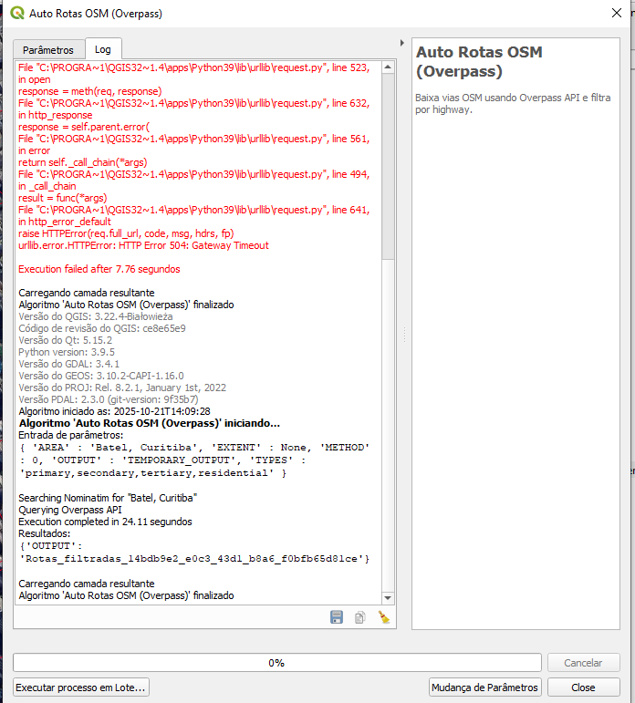
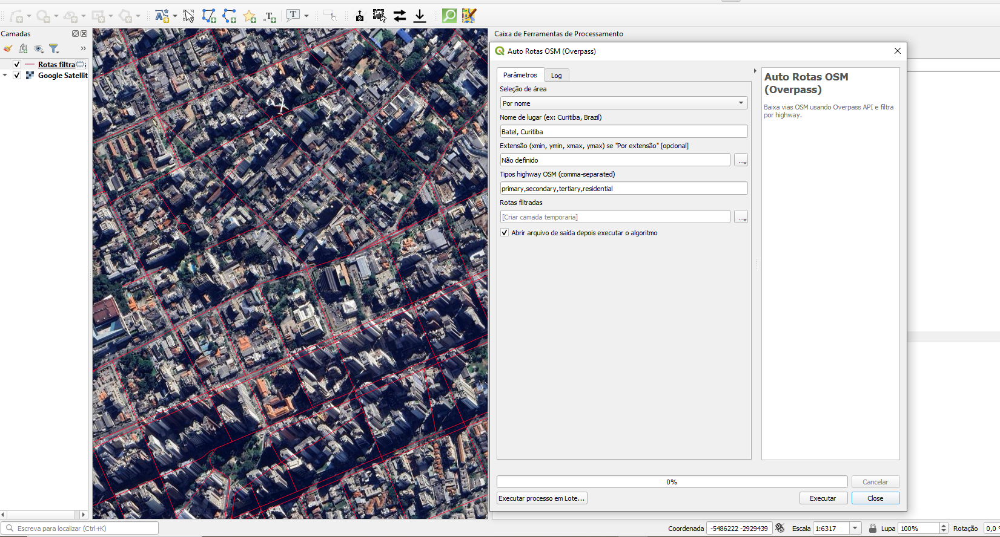

Screenshots

Log Interface

Area Configuration and Road Filters

Resulting Road Layer
Python plugin for QGIS that performs automated queries to the OpenStreetMap Overpass API.
Allows downloading and filtering roads for a specific area, by location name or geographic coordinates.
Auto Routes OSM (Overpass) is a Python plugin for QGIS that allows downloading road data from OpenStreetMap (OSM) using the Overpass API. It provides two ways to define the area of interest: by name (e.g., “Curitiba, Brazil”) or by geographic coordinates (xmin, ymin, xmax, ymax).
Once the area is defined, the user can choose which types of highways to include (e.g., primary, secondary, residential, etc.), and the plugin automatically processes the query, generating a line layer in QGIS for analysis and visualization.
During several mapping and road network analysis projects in QGIS, I noticed that obtaining OpenStreetMap road data was repetitive and time-consuming. We often had to open Overpass Turbo, manually write a query, and then import the result into QGIS — a tedious and error-prone process.
To simplify this workflow, I developed Auto Routes OSM (Overpass), a plugin that automates all these steps directly within QGIS. It allows you to define the area of interest (by name or coordinates), choose road types, and — with just one click — get the road layer directly on the map.
With this plugin, you can:
primary, secondary, residential...);For example, defining the area as “Batel, Curitiba” and filtering road types primary, secondary, tertiary, and residential will fetch those roads within the specified region and create a line layer for visualization and analysis in QGIS.
Log Interface
Area Configuration and Road Filters
Resulting Road Layer